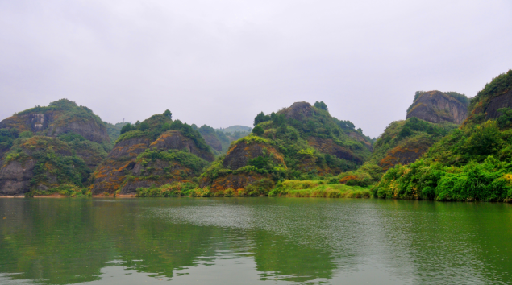

溆浦思蒙丹霞山水
中国溆浦思蒙十里丹霞“小桂林”距县城西十公里。思蒙十里丹霞，十里美 景，三十平方公里的丹霞地貌，分布在溆水两岸，俨然如桂林漓江，秀峰如画。座座小山似巨大的盆景，倒映在碧水之中...
中国溆浦思蒙十里丹霞“小桂林”距县城西十公里。思蒙十里丹霞，十里美 景，三十平方公里的丹霞地貌，分布在溆水两岸，俨然如桂林漓江，秀峰如画。座座小山似巨大的盆景，倒映在碧水之中...
重庆，它是一座山城，因建立在重重山峦之上，起伏的山势和依山而建的楼房让地图在这里显得用处不大，因为地图是平面的，而重庆则是立体的。重庆也被人叫做“雾都”，需要拨开层层迷雾才能见到它的真身，长江和嘉陵江的交汇处，云天与高楼相接，薄雾弥散，宛如仙境一般。它还有一个名字叫“火炉”，和这里的人这里的美食一样，火辣辣的直接抵达人心，直来直去从不绕弯子,端的是豪爽二字。 小吃、美女、火锅、通通都是重庆的标签，但都不能单独拿出来代表它，重庆的魅力是需要自己去慢慢探索的。历史的偶然性和必然性在这里得到重合，让它既充满了江湖味又时时被现代化文明充斥着。 每当暮色降临，万家灯火璀璨，流光溢彩，难怪重庆素有“小香港”之称。它的夜景可是公认比上海和香港的还要漂亮...
看到了美丽而雄伟的布达拉宫，在蓝天白云的映衬下格外辉煌，而且很是壮观。也是藏族人民最神圣的地方，很多虔诚的信徒。承载的是历史变革之中的柔情。藏族同胞都很淳朴，肃穆的心情...
衡山，又名南岳，是我国五岳之一，位于国家历史文化名城、湖南省第二大城市——衡阳市南岳区。 衡山七十二群峰，层峦叠嶂，气势磅礴，素以「五岳独秀」、「宗教圣地」、「文明奥区」、「中华寿岳」著称于世。现为国家级重点风景名胜区、国家级自然保护区、全国文明风景旅游区示范点和国家5A级旅游景区。 由于气候条件较其他四岳为好，处处是茂林修竹，终年翠绿；奇花异草，四时飘香，自然景色十分秀丽，因而又有“南岳独秀”的美称。 祝融峰之高、藏经殿之秀、水帘洞之奇、方广寺之深堪称“衡山四绝”；春观花、夏看云、秋望日、冬赏雪为“衡山四季佳景”。 南岳衡山还有许多名胜古迹和神话传说，吸引了历代各种人物，形成丰富多彩的文化沉积，宛如一个辽阔的人文与山水文化和谐统一、水乳交融的巨型公园。 1982年，衡山作为我国著名的自然景观和人文景观，以湖南衡山风景名胜区的名义，被国务院批准列入第一批国家级风景名胜区名单。2007年8月1日，南岳衡山经国务院批准列为国家级自然保护区...
西沙群岛，中国南海四大群岛之一，由永乐群岛和宣德群岛组成，共有22个岛屿，7个沙洲，另有10多个暗礁暗滩。这片大大小小的珊瑚岛屿群漂浮在三万平方公里的海域上，美丽而纯净。西沙群岛像朵朵睡莲，浮珠般在绿波万顷的南中国海上。 它位于海南岛东南约180海里处，与东沙、中沙、南沙群岛构成中国最南端的疆土。西沙群岛，从东北向西南伸展，在长250公里，宽约150公里的海域里，由45座岛、洲、礁、沙滩组成。西沙群岛岛屿，东面为宜德群岛，由北岛、石岛和永兴岛等7个岛屿组成；西面是永乐群岛，由金银、中建、珊瑚8个岛屿组成。 西沙群岛上栖息着鸟类40多种，常见的有鲣鸟、乌燕鸥、黑枕燕鸥、大凤头燕鸥和暗缘乡眼等。在整个树林的上层及其上空，海鸟成千上万终日盘旋飞翔，千鸣万啭，自成奇观，素称“鸟的天堂”...